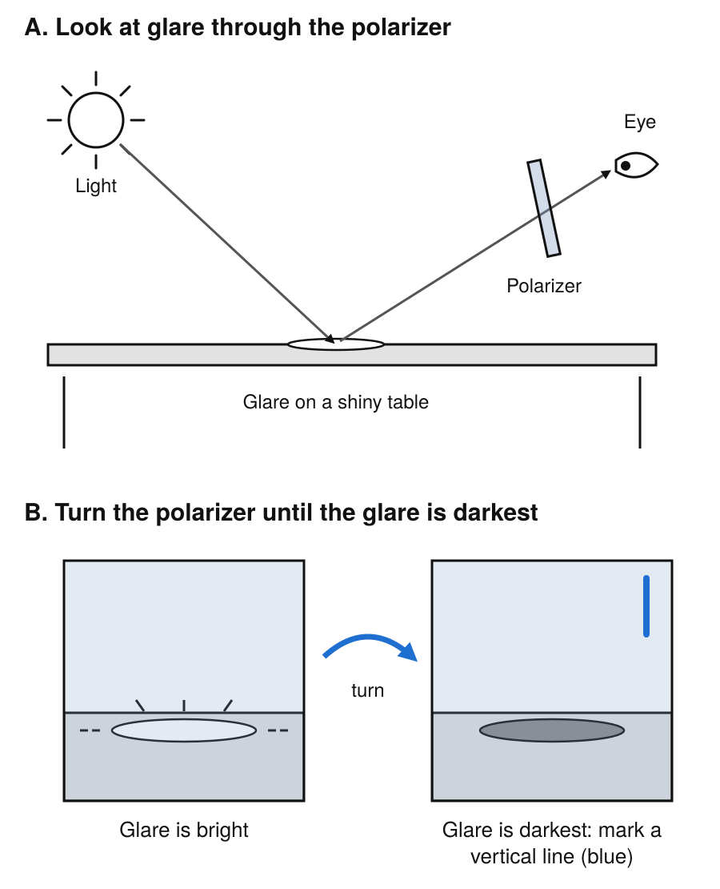
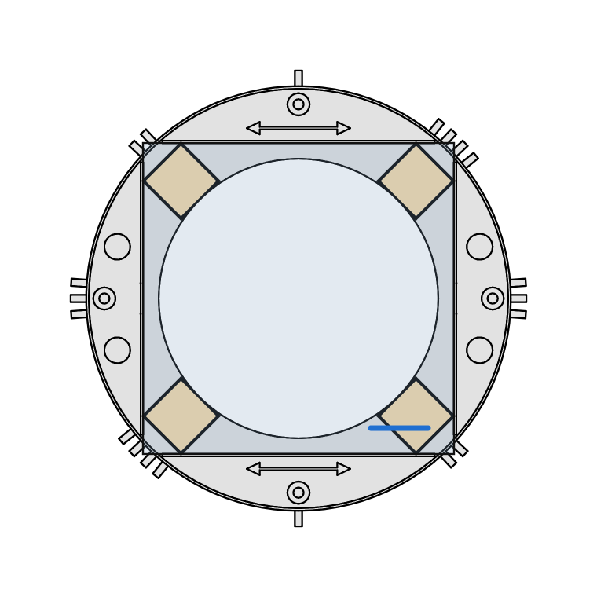
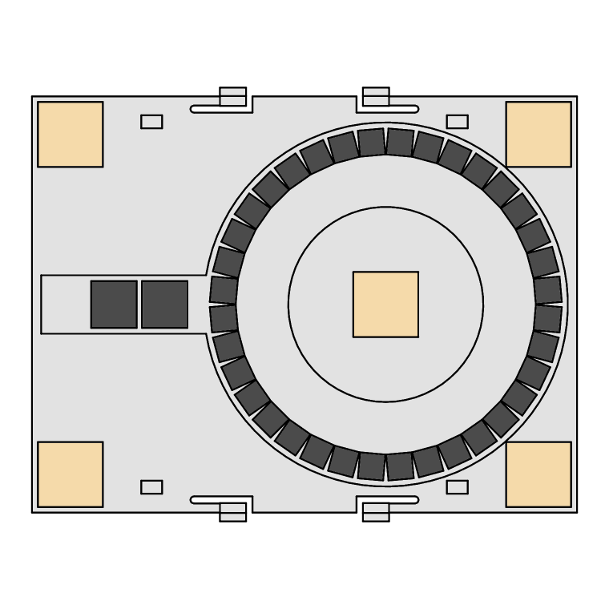

Chapter contents
User manual
Assembly and calibration
Getting started
Assembly animation: calibration, bearing and MagSafe
Selected parts of the original assembly animation. The illustrated guide below covers the remaining steps. Follow the current parts list and assembly order. Play, pause or jump to a section.
3. Check the parts
| Part | Quantity | Purpose |
|---|---|---|
| Base | 1 | Holds the bearing and carries the MagSafe plate. |
| Dial | 1 | Holds the polarizer and turns on the bearing. |
| MagSafe plate | 1 | Holds the magnet sticker and joins the base to the iPhone. |
| MagSafe magnet sticker | 1 | A ring of magnets with a tail. Outer diameter 54 mm; inner diameter 46 mm. Both sticky sides are covered by blue film. |
| Thin ball bearing | 1 | 50 × 65 × 7 mm. Lets the dial turn smoothly. |
| Round magnets | 12 | Eight in the base and four in the dial. They make the dial click into place. |
| Cube magnets | 3 | 4 × 4 × 4 mm. Hold the bearing's inner ring against the base. |
| Linear polarizer | 1 | 60 × 60 mm. Filters light along one axis. |
| Nano gel pads | 9 | 10 × 10 mm. Four hold the polarizer; five join the MagSafe plate to the base. |
The base stays fixed on the iPhone. The dial turns. The base pointer reads the groups of one, two, three or four ridges on the dial. The direction arrows show which way to turn. The double-headed arrows mark the 0° polarizer axis.
| Position | Ridges at the pointer | Angle |
|---|---|---|
| 1 | 1 | 0° |
| 2 | 2 | 45° |
| 3 | 3 | 90° |
| 4 | 4 | 135° |
Each ridge count appears twice, on opposite sides. Both give the same polarizer angle. The dial clicks every 45°, eight times in one turn.

Figure 2. Dial guide: four pad pockets, direction arrows, axis arrows and groups of one to four ridges.

Figure 3. Positions 1–4 correspond to 0°, 45°, 90° and 135°. Read the ridge group at the base pointer.
4. Assemble the rotator
Watch the calibration, bearing and MagSafe installation animation online: https://teyuan-lab.github.io/S012Cam-webpage-manual/rotator.html#assembly-movie
Step 1. Check the printed parts
If your print used supports, remove the large pieces with small pliers and carefully trim any residue. Always cut away from your hands. If it was printed without supports, skip removal. Check that the magnet pockets, bearing recess and cube magnet seats are clear.
Step 2. Insert the round magnets
Keep all 12 magnets stacked. Slide each magnet off the same end. Always insert the same face first. Press eight into the base and four into the dial until flush. If one is reversed, push it out through the small hole behind its pocket with a blunt pin and flip it.

Figure 4. Keep the same face up on every round magnet. Slide each magnet from the same end of the stack.

Figure 5. Eight round magnets go in the base; four go in the dial.
Step 3. Fit the bearing
Turn the dial upside down. Put the bearing in its round recess. Press evenly around the outer ring until it reaches the lip.

Figure 6. Press evenly on the bearing outer ring only.
Step 4. Join the dial and base
Lower the dial and bearing onto the base. The bearing's inner ring slides over the raised hub.

Figure 7. Lower the dial and bearing together onto the base hub.
Step 5. Insert the cube magnets
Through the centre of the dial, put the three cube magnets in their seats. They hold the bearing's inner ring against the base.

Figure 8. The three blue circles show the cube magnet seats.
Step 6. Test the dial
Turn the dial once in the direction of the arrows. It should click and hold every 45°, with no scraping. The gap between dial and base is about 1 mm. The cube magnets stay with the base and inner ring; they do not turn with the dial. If a stop repels the dial, reverse the round magnet at that stop.

Figure 9. Check the assembled rotator before fitting the polarizer. The dial must turn without scraping.
5. Fit and check the polarizer
Find its transmission axis
- Leave the protective film on.
- Look at glare on a flat horizontal surface, such as a glass table, from a low angle.
- Hold the polarizer in front of one eye. Turn it slowly until the glare is darkest.
- Without turning it again, draw a short vertical line near one corner on the film. This marks the transmission axis.


Figure 10. Look at glare through the polarizer and turn it until the reflection is darkest.

Figure 11. The same glass table: bright glare on the left; glare suppressed on the right.

Figure 12. Mark the vertical transmission axis on the protective film while the glare is darkest.
Fit it to the dial
- Set the dial to position 1, with one ridge at the pointer.
- Put four gel pads in the four dial pockets. Peel the top liners.
- Keep the polarizer's protective film facing up. Line up its pen mark with the double-headed arrows. Match its edges to the engraved outline.
- Press the four corners onto the pads. Remove the protective film. The corners extending slightly beyond the dial are normal.

Figure 13. Four gel pads hold the polarizer in the dial pockets.


Figure 14. Align the transmission-axis mark with the double-headed arrows at position 1.
6. Fit the MagSafe plate and mount the rotator
Fit the magnet sticker
- With both blue films still on, try both sides of the magnet sticker against the iPhone. Find the side that holds firmly.
- Peel the blue film from that side. Press that side into the ring groove on top of the MagSafe plate. Put the tail in the slot. The two small ears belong to the film and come away with it.
- Press firmly around the whole ring. Leave the second film on until joining the plate to the base.
Join the plate to the base
- Put the five remaining gel pads in the five square pockets: one at the centre and one at each corner.
- Peel the pad liners and the sticker's second blue film.
- Align the MagSafe plate with the back of the base, edge to edge. Its flat back faces the iPhone.
- Press the plates together for 10 seconds.


Figure 15. MagSafe plate: the ring and tail hold the magnet sticker. Five gel pads join the plate to the base.
Mount and check
Wipe the back of the iPhone with a soft cloth. Snap on the rotator with the camera window over the lenses. Open S012Cam and check every available camera. If an edge is blocked, lift the rotator off and mount it again.
For the full ultra wide view, remove the iPhone case. A case can block the upper-left corner of this view.
Before the first measurement, hold the iPhone level and measure glare on a flat horizontal surface. The result should show horizontal polarization. If it shows vertical, refit the polarizer after turning it 90°.